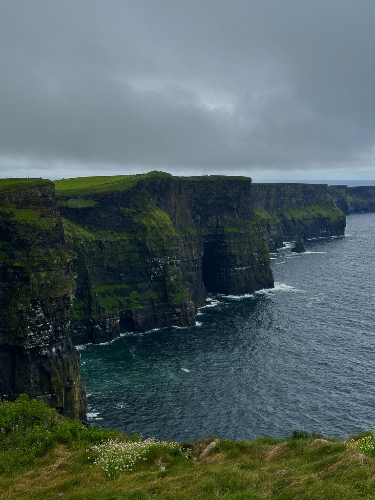
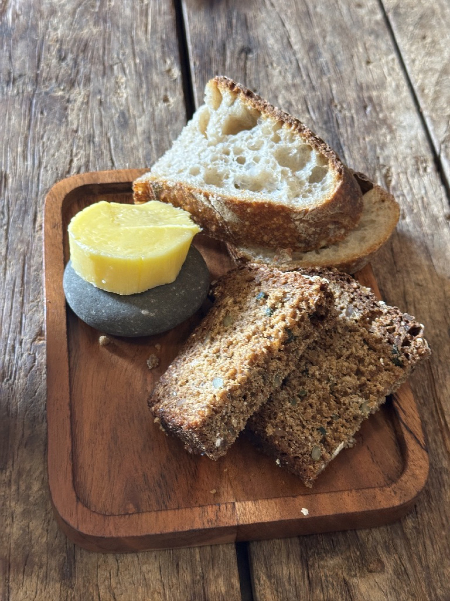
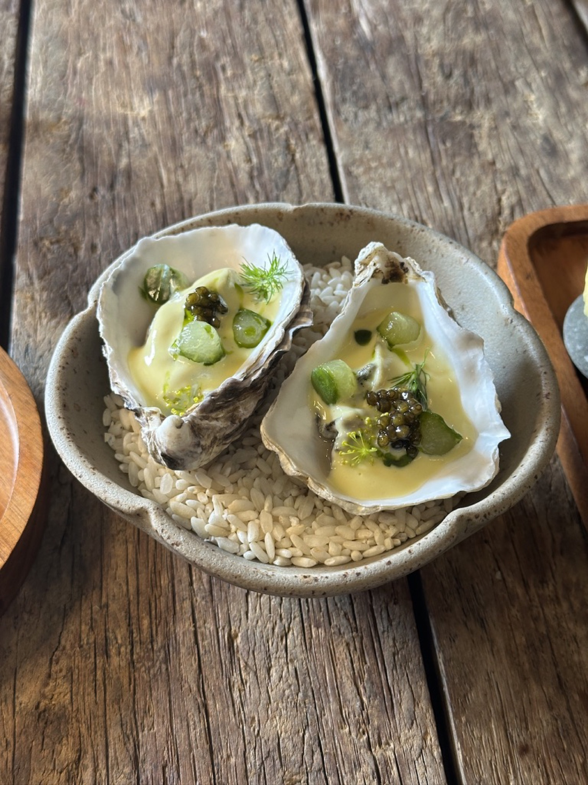
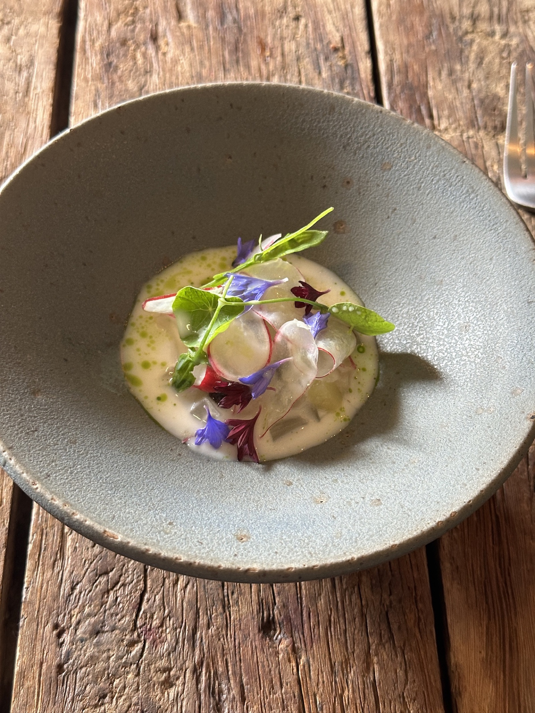
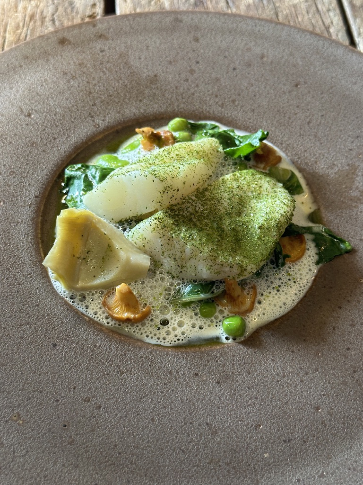
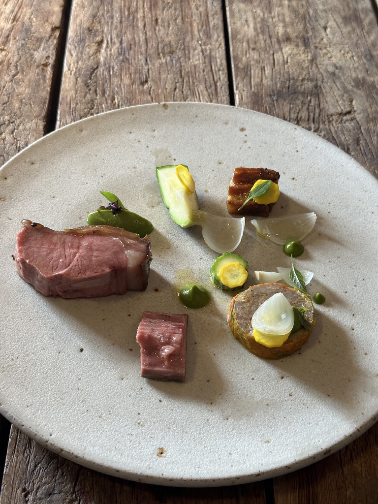
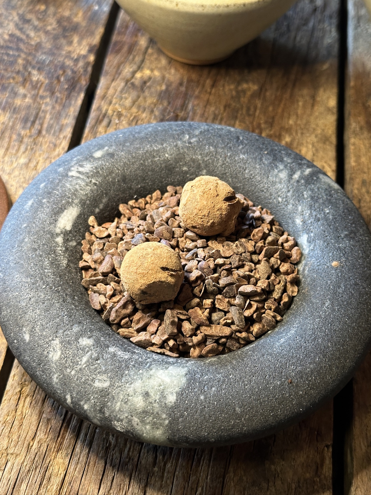
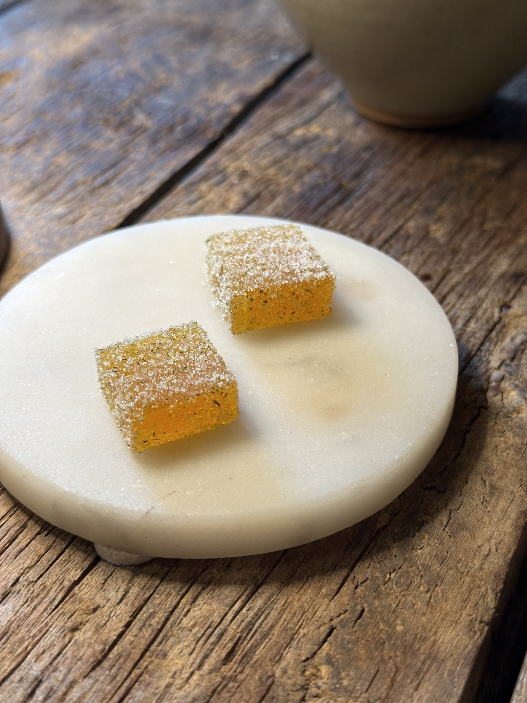
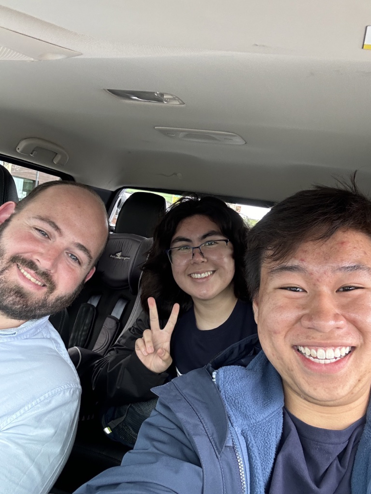

Getting There
We had just visited the Cliffs of Moher. If you've never been to western Ireland, let me paint a picture: the countryside is impossibly green, the roads are impossibly narrow, and getting anywhere without a car is impossibly difficult. We had no car.
Our plan to reach Homestead Cottage for lunch involved a taxi — a €30 fare paid over the phone to a driver we'd never met, arranged in a one-minute call that felt more like a gamble than a reservation. The drive was only ten minutes, but the whole situation had the energy of something about to go wrong.
It didn't go wrong. It went beautifully wrong, in the way that the best travel stories always do.
The Arrival
When we pulled up to the restaurant, the first thing I noticed was the chauffeurs. Half a dozen of them, standing by their cars in the gravel car park, waiting patiently while their guests dined inside. We had just tumbled out of a taxi. The chauffeurs turned their heads in unison to watch us walk in, and I could feel every one of their eyes on us.
Inside, it got worse — or better, depending on how you look at it. Every other guest was dressed immaculately. Suits, dresses, the kind of quiet elegance that comes naturally to people who eat at Michelin-starred restaurants regularly. We were in jeans and t-shirts. I had a large backpack that I shoved under the table because there was nowhere else to put it. We looked like we'd wandered in from a hiking trail. Which, to be fair, we basically had.
None of it mattered. The staff didn't blink. They seated us, handed us menus, and treated us like we belonged there — because, as I would come to learn, that's what Michelin hospitality actually means.
The Bread and Butter
The lunch service began with bread and Glenilen butter. I know that sounds like a strange thing to get excited about, but I had been waiting to try Irish butter since we landed. It did not disappoint.
The butter was exceptional — rich, grassy, almost sweet, with a depth of flavor that immediately told you these cows had been eating very, very well. I could practically taste the green pastures of County Clare. The bread was warm and crusty, baked in-house, and I had to stop myself from filling up on it before the first course arrived.
"I could almost taste the green grass the cows were eating."
The Courses
First out was the Flaggy Shore oyster with champagne and dill. Nothing to write home about in terms of novelty — it's an oyster — but it was delicious nonetheless. Clean, briny, and impossibly fresh, the kind of oyster that tastes like the sea because it was pulled from it that morning.
Next came the Connemara scallop with ice radish, kohlrabi, buttermilk, and apple. This was where the meal shifted from good to exceptional. The scallop was silky and sweet, and the accompaniments — crunchy, acidic, creamy — played off each other like a well-rehearsed ensemble. Back-to-back seafood, sitting in a stone cottage five minutes from the shore. It made perfect sense.
The John Dory
Then the entrees arrived, and the John Dory with dill, apple, and horseradish stopped me in my tracks.
The fish was firm — not in the way that overcooked fish is firm, but in the way that perfectly cooked fish holds its structure while still being delicate and flaky inside. It had this beautiful coating of dill, and I couldn't figure out how they'd done it. There were no sear marks anywhere on the fish. No crust from a pan. It was too gentle, too precise.
I asked our waitress how they'd cooked it. I guessed steamed. She disappeared into the kitchen and came back surprised — I'd guessed right. Steamed, then coated in dill. She told me I had good taste. From that point on, she kept a closer eye on our table. I like to think we earned it.
"Steamed, then coated in dill. No sear, no crust — just the fish, exactly as it should be."
The Lamb
The Burren spring lamb was the other entree. It did not taste gamey in the slightest — which, for lamb, is the highest compliment I can give. The meat was tender, pink in the center, cooked with a precision that made each bite feel intentional.
But the star was the au jus. I have not tasted anything like it before. It was extraordinarily meaty, glossy, and had this depth of flavor that reminded me of mature cheese — that same concentrated, almost fermented quality that comes from time and patience. It coated the lamb and everything else on the plate and turned each bite into something deeply satisfying.
Dessert
Three desserts arrived in sequence. The dark chocolate cream with miso caramel and shortbread was first — not too sweet, which is exactly my preference. The bitterness of the chocolate balanced perfectly against the salty-sweet miso caramel.

Next, the JJ Corry whiskey chocolate truffle. I'll be honest — I enjoyed the cacao nibs more than the mousse itself. The nibs had this incredible crunch and bitterness that cut through the richness.
Lastly, the passion fruit pâte de fruit. Tangy and sweet — a perfect way to end the meal. It left a bright, clean note on the palate that made me feel like I could start the whole lunch over again.
The Ride Home
Here's the thing about dining at a Michelin-starred restaurant in rural Ireland without a car: you have to leave. And our hotel was an hour's bus ride away. The bus stop was a 45-minute walk from the restaurant. The bus was due in 15 minutes.
Around the time the John Dory arrived, I'd asked one of the waiters to arrange a taxi for us so we could leave as soon as the meal finished. I didn't see that waiter again for the rest of the service. As we were wrapping up, I asked the waitress who'd been looking after us — the one who'd told me I had good taste — whether a taxi had been arranged.
She disappeared into the kitchen. When she came back, she was smiling.
"The head chef will be driving you to the bus stop."
I couldn't stop grinning. We walked outside, and there was Robbie — the head chef — standing by his truck, ready to go. We climbed in, and I immediately started firing questions at him. What was his background? Where should we eat next in Ireland? And — most importantly — what was in that au jus?
He told me the jus was made 48 hours in advance. Extra bones were ordered specifically for it — just for the jus. The kind of detail you don't see, don't taste consciously, but absolutely feel in every bite. That's what separates great cooking from everything else.
Robbie dropped us at the bus stop, we shook hands, and he drove back to his kitchen. We caught the bus with minutes to spare.
"I've come to realize that Michelin-starred places are known as much for the hospitality as the food. Homestead Cottage proved it."
The journey to get there was treacherous. The taxi was a gamble. We were the worst-dressed people in the room. And the head chef drove us to our bus stop. I would do it all over again in a heartbeat.
Thank you to Homestead Cottage and Head Chef Robbie for a dining experience I'll never forget.
Homestead Cottage
📍 R478, Luogh North, Doolin, Co. Clare, Ireland
🕐 Lunch & Dinner · Reservations required
⭐ Michelin Star